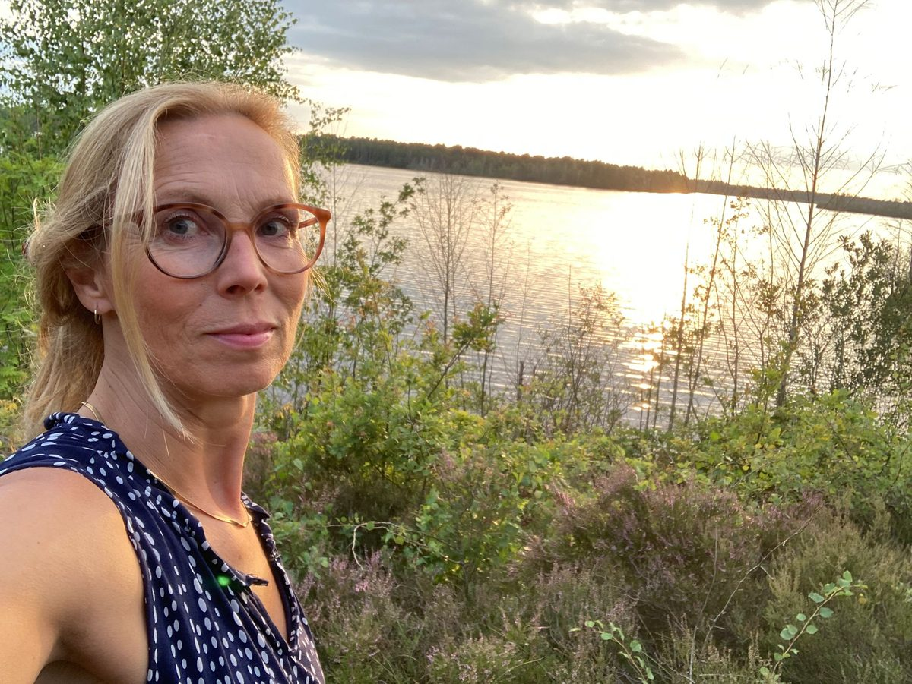

Mijn naam is Kim Peters. Graag neem ik je mee in het verhaal achter deze praktijk en wat mij heeft bewogen om hiermee te starten.
Ik ben werkzaam als psychosomatisch fysiotherapeut. Al jarenlang ben ik gefascineerd door de mens achter de klacht, en door de vraag waarom klachten ontstaan, blijven bestaan of juist verdwijnen.
Naast mijn werk heb ik al jaren een bijzondere interesse in ademhaling. Die ontstond tijdens een yogales, waar ik ontdekte dat mijn eigen adempatroon niet optimaal was. Toen ik jaren geleden zelf de effecten van een rustige, ontspannen ademhaling ervoer, werd me steeds duidelijker hoeveel invloed onze ademhaling kan hebben op spanning, ontspanning, energie, herstel en lichaamsbewustzijn.
Die ervaring liet me niet meer los. Ik volgde meerdere opleidingen op het gebied van ademtherapie, en mijn enthousiasme voor ademhaling als therapeutisch hulpmiddel groeide, net als mijn overtuiging van de kracht die ademwerk kan hebben op fysiek, mentaal en emotioneel welzijn.
Dat enthousiasme vormde uiteindelijk de basis voor AdemRuimte. In 2026 besloot ik, naast mijn werk als psychosomatisch fysiotherapeut, een eigen praktijk voor ademtherapie te starten, vanuit de wens om mijn kennis en ervaring te delen.
Mocht je nieuwsgierig zijn naar wat ademtherapie voor jou kan betekenen, dan ben je van harte welkom.
Een plek waar je mag zijn zoals je bent, zonder oordeel, in alle rust.
Geen prestatie, geen druk. We werken in jouw tempo, met aandacht.
Persoonlijke begeleiding, afgestemd op jouw hulpvraag en lichaam.
Onderbouwd vanuit een medische en fysiotherapeutische achtergrond.
AdemRuimte zit tussen de puur medisch-fysieke aanpak en de puur psychologische aanpak. De meerwaarde is dat transformatie op lichaamsniveau mogelijk wordt, daar waar veel andere vormen van hulp vooral cognitief werken.
Als psychosomatisch fysiotherapeut heb ik ruime ervaring met klachten waarbij lichaam en psyche samen een rol spelen, chronische pijn, spanningsklachten en hyperventilatie.
Vrijblijvend, in alle rust. Bel of mail gerust, of plan direct een kennismaking.
Vertel kort wat er speelt. Ik bel of mail binnen één werkdag terug om een moment te plannen dat past.
Wat je deelt, blijft tussen ons. Altijd.